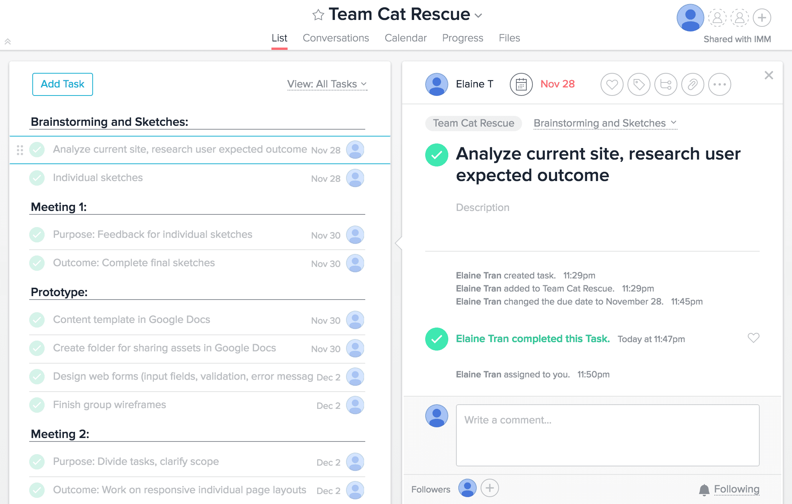
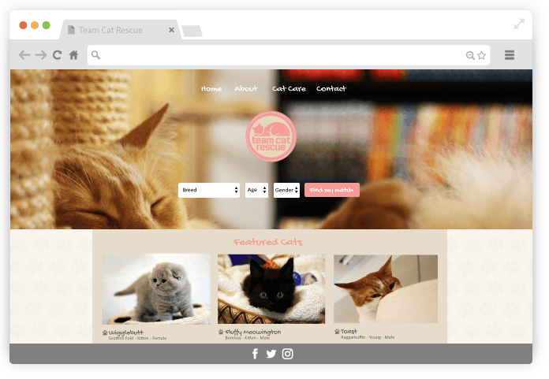
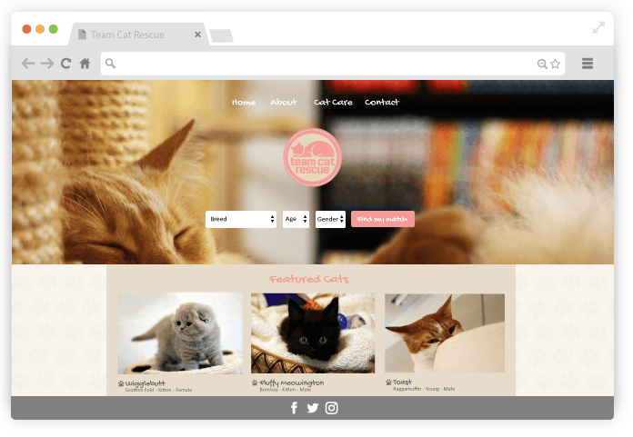
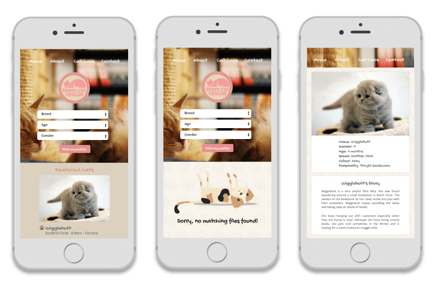

MY ROLE
I led the design and project management role in a collaborative redesign for Team Cat Rescue’s site, December 2016. I worked with a small team of developers and a designer.
I created the final group wireframes and prototypes that were driven by human-centered design principles.
Planning and Scope Definition: I organized the team’s schedule, assigned tasks to members, held meetings, clarified the scope and developed a realistic and comprehensive timeline. I also created the content template for the site's information architecture.
THE CHALLENGE
ESTABLISHING PURPOSE
We noticed that Team Cat Rescue’s current site lacked focus. The site emphasize foster-based rescue for their cats but the Call-to-Action sent users to the donation page. The site was not optimal for mobile use.

The core purpose of this redesign is for customers to learn about the story of these cats and find their perfect companion.
Our challenge was that we had three weeks to re-establish the site's purpose and enhance the basic functionality of the site.
The requirements were to build a responsive multi-page website, collaborate through a Git repository, implement two databases and create visual coherency between the pages of the site.
THE APPROACH
DIVERGENT-CONVERGENT RHYTHM
// Exploration Phase (Divergent thinking): In this phase, each team member conducted market research and sketched our own ideas of how the site should look like. Learning to ask the right questions is pivotal to any design process in order to incorporate appropriate UX strategies.
// Refinement Phase (Convergent thinking): In the refinement phase, we pitched our ideas and findings to the team and out group members. This helped us attain the feedback we needed to push our project forward.
// Outcome: Selecting features most relevant to our goal.
- Simple/effective filtering system upon landing
- Building a personable experience through individual cat stories and success stories
- Booking an appointment to see the cat

 

THE EXECUTION
FILTERING FUNCTION
Option of applying multiple filters ---> filter by Breed, Age and/or Gender
Only display search results ---> Set default input fields that display results only if filters have been applied
Indication that no search results were found ----> focus effect with error message

RESPONSIVE DESIGN
RELECTIONS
WHAT I LEARNED
Through this project, I learned that collaboration goes beyond communication. It requires a mutual effort in setting attainable goals, creative problem solving and a streamlined approval process.
It was important to always have someone keep the purpose and goal of the project in check. The “What is this for” and “Are we building the right thing" rather than being too focused on what we are building.
I think that there is value in having clarity in not just the finished project but the intended experience you want the user to have. In our case, we wanted to deliver the feeling of warmth, astonishment and wonder to the customer when they are able to find and eventually meet a cat that's in need of their love.
A collaborative site also meant that everyone needed to be completely clear about their assigned tasks. There were times where changes that were discussed were not implemented. Our solution was to have a record that was accessible to all team members of what needed to be implemented next.
Overall, we were able to practice a variety of our own skills while working as a team.